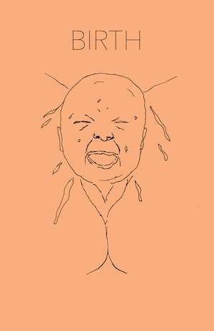
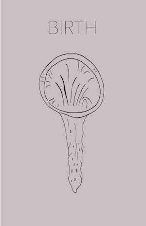
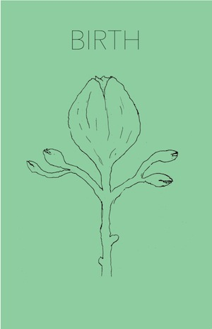

This project involved taking a word and applying it to an image in a practical, a poetic and a persuasive way. Practical meaning the most literal, poetic meaning less literal and persuasive meaning it sends a message to people.